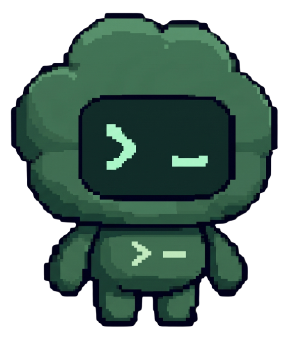

My role: product direction, architecture, data model, safety controls, evaluation and releases. Claude Code and MCP integrations support implementation, QA and store work.
Selected work / 02
Shipping is half the job. Adoption is the other.
Before building ManeMap, I spent 4.5 years helping enterprise customers launch, use and renew software — building on nearly a decade of project delivery.
In practiceProduct decisions get better when you understand how people work after launch.
Customer signalProduct decisionAdoption
2022–2025 / RyteSenior Customer Success Manager
Owned enterprise onboarding, reviews, renewals and expansion; drove adoption of AI-powered SEO features.
Promoted in 12 months · Recovered and renewed a €10k/month account
2021–2022 / e-bot7Customer Adoption Manager
Rolled out enterprise AI chatbots, configuring flows, NLU training data, escalations, handover and integrations. At Vienna Airport, unresolved traveller questions became Zendesk tickets, while I onboarded the dedicated bot manager to run content updates after go-live.
2011–2020 / Move-Ment.netProject Manager
Planned and delivered client and event projects across cross-functional teams, then applied lean methods to make workflows clearer and faster.
Recruiter shortcut
Ask the CV directly.

Get a focused answer about my experience, technical decisions or role fit. Every response is grounded in the CV and points back to its source.